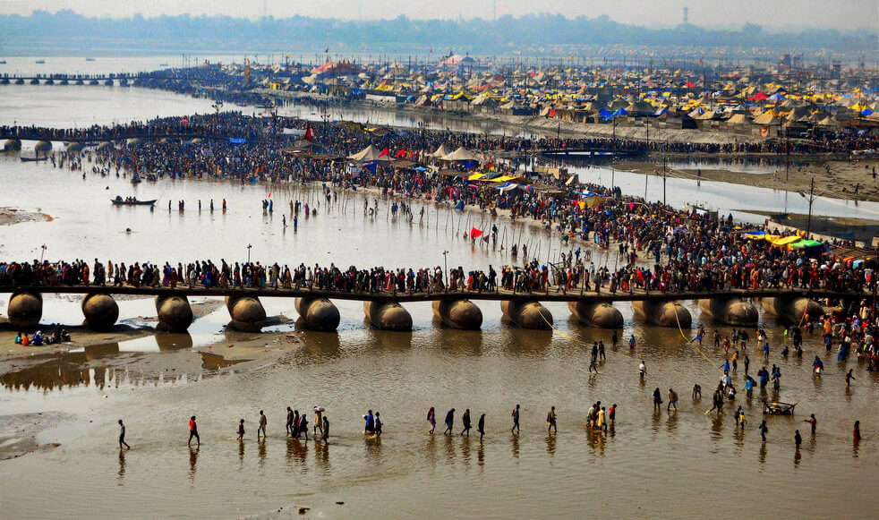

|  |
The Prayag Kumbh Mela, also known as Allahabad Kumbh Mela is a mela, or religious gathering, associated with Hinduism and held in the city of Prayagraj, India, at the Triveni Sangam, the confluence of the Ganges, the Yamuna, and the mythical Sarasvati river. The festival is marked by a ritual dip in the waters, but it is also a celebration of community commerce with numerous fairs, education, religious discourses by saints, mass feedings of monks or the poor, and entertainment spectacle.
The Mela is one of the four fairs traditionally recognized as Kumbh Melas. An annual fair, known as Magh Mela, has been held at Prayag Triveni sangam since ancient times (at least early centuries).
The site, its sacredness, bathing pilgrimage and the annual festival is mentioned in the ancient Puranas and the epic Mahabharata. The festival is also mentioned in later era texts such as those by Muslim historians of the Mughal Empire. However, these sources do not use the phrase "Kumbh Mela" for the bathing festival at Allahabad. The earliest mention of a Kumbh Mela at Allahabad occurs only after the mid-19th century in colonial era documents. The Prayagwals (local Brahmins of Prayag) are believed to have adopted the 6 year kumbha, the 12-year cycle of the historic Maha Kumbh Mela and annual Magh Mela around this time. Since then, every 12 years, the Magh Mela turns into a Maha Kumbh Mela, and six years after a Kumbh Mela, it is an Ardh Kumbh ("Half Kumbh") or Kumbh Mela. TO KNOW MORE ABOUT 'MAHA-MUMBH MELA' AND 'ARDH KUMBH MELA' GO TO THEIR SECTION..
The Kumbh Mela at Allahabad is held in the month of Magh when Jupiter is in Aries, and Sun and Moon are in Capricorn; or Jupiter is in Taurus, and Sun in Capricorn. However, at times this astrological combination (Kumbh Yoga) does not coincide with the month of Magh. In such a case, the mela is still held in Magh. For example, the 1989 Kumbh Mela should have begun in mid-March according to astrological calculations; however, it started in January.
According to Hindu mythology, Vishnu dropped drops of amrita (the drink of immortality) at four places, while transporting it in a kumbha (pot). These four places, including Allahabad, are identified as the present-day sites of the Kumbh Mela. The river-side fair at Allahabad is centuries old, but its association with the kumbha myth and a 12-year old cycle dates back to the 19th century. The priests of Allahabad borrowed these concepts from the Haridwar Kumbh Mela and applied it to their local Magh Mela, an annual celebration. The Magh Mela probably dates back to the early centuries CE, and has been mentioned in several Puranas.